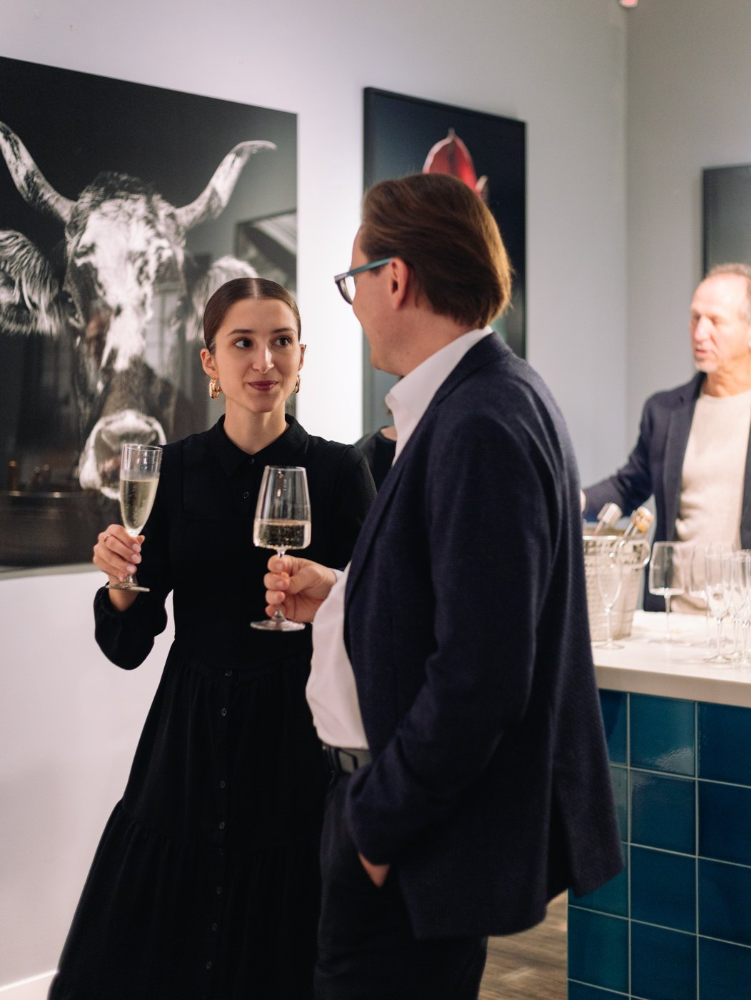

Ways to discover
Find art your way
Some people know exactly what they are looking for. Most do not, and that is the better place to start. Five ways into the collection: move eight sliders, say yes or next, upload your room, drift through the cloud, or talk to a person.
Start where you are
Each way answers a different question
Not five versions of the same search. Five different starting points. Find the sentence that is true for you.
One · Art Finder
Eight sliders, and no question about art history
You do not describe what you want, you set how it should feel. Subtle or intense, nature or urban, quiet or vivid. The collection re-sorts itself with every slider.
The works could not be loaded.
Please reload the page. You can also find every work through search.
Nothing matches this setting.
Move a slider back, or let the Art Liker lead instead.
Live data. These 806 works carry their real Art Finder coordinates from the shop, and the same ranking runs here on the page. The button opens the real Art Finder with exactly these slider values.
Two · Art Liker
One work, one wall, two buttons
No form, no filters. Every work hangs on a real wall at its real size. You say yes or next. What you keep goes to your wishlist.

Saved
Live data. Real works at their real dimensions, mounted on the same room photograph the Art Liker uses in the shop.
Three · Upload
Show us a picture, we answer with art
Two ways, one tool. Upload the room the art will hang in, or the image you cannot stop thinking about. Both read colour, light and mood, and answer with editions from the collection.
Your room
Chosen for this room
Live data. These three room photographs were sent to the real upload on 27 August 2026, and the works are its real answer. Shown here are the room-specific hits, see the annotations.
Your inspiration
Works with the same spark
Live data from the same endpoint. The source here is a work from the catalogue so the answer can be checked. Works by the source artist are removed, because an image from outside the catalogue would not produce that cluster.
Four · Art Cloud
No grid, no filter, no destination
The collection as a landscape instead of a list. Works drift in the dark, you move through them, and whatever stops you has found you rather than the other way round.
Welcome to LUMAS Cloudscape. Move your cursor, and lose yourself in discovering art.
In the shop the Art Cloud is limited to desktop and has no address of its own: it opens only from the menu. That means it cannot be linked, shared, bookmarked or found. That is a decision, not a technical limit.
Live data. 150 works carrying the real positions from the Art Cloud in the shop.
Five · Art consultation
However you would like to talk, a real consultant answers
Not a chatbot, not a form that disappears. Choose the way that suits you: in a gallery, by video, phone, WhatsApp or email. One of our Art Consultants takes it from there, and a named consultant usually replies within a working day. Free, and without obligation.

Which way, for what
All of them lead into the same collection. What differs is what you have to bring, and what comes back.
| Way | What you bring | What comes back | Best when | On a phone |
|---|---|---|---|---|
| Art Finder | Eight slider positions | The collection re-sorted, closest match first | You can name the mood but not the motif | Yes |
| Art Liker | One tap per work | A saved list you build by reacting | You do not want to decide anything up front | Yes |
| Upload your room | A photo of the wall | Works chosen against the room's colour and light | The room is the constraint, not the taste | Yes |
| Upload an image | A picture you like | Editions with the same feel | You saw it elsewhere and cannot name it | Yes |
| Art Cloud | Your cursor | Whatever crosses your path | You have time and no brief | No, desktop only |
| Art consultation | A sentence about what you are after | A named Art Consultant's answer, usually within a working day | The decision matters more than the search | Yes |
Everything here was read from the live shop on 27 August 2026. “Desktop only” is not an estimate: in the menu the Art Cloud carries the classes hidden-sm hidden-xs. Reply times are quoted from the existing advisory page and are not measured.
One collection
Five doors.
The same collection behind them.
No way shows you less than the others. They simply ask you different things. If none of them fits, the shortest one is still open: write to us, and a person answers.